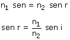
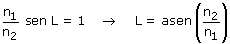

b) La reflexión total puede producirse cuando la luz llega a la superficie de separación de dos medios de distinto índice siendo n2 < n1 (La luz pasa de un medio lento a otro rápido)  Si el ángulo de incidencia fuera tal que (n1/n2)·sen i > 1, resultaría sen r > 1 lo cual es imposible, así que la luz no podría refractarse y se reflejaría totalmente. El ángulo de incidencia a partir del cual se produce reflexión total se denomina ángulo límite y vale:  |